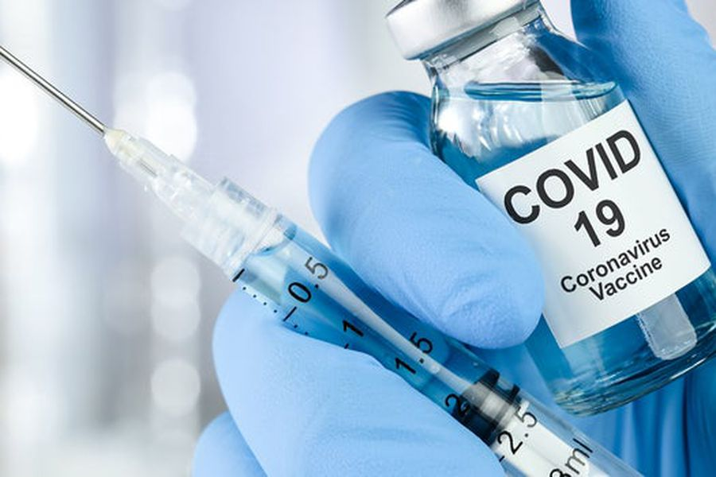

La vacuna ya se encuentra disponible para personas de 18 años en adelante.
Las vacunas contra la COVID-19 protegen contra esta enfermedad porque inducen inmunidad contra el virus SARS-Cov-2 que la causa, es decir, reducen el riesgo de que de este cause síntomas y tenga consecuencias para la salud.
Sí. Los estudios confirman que las vacunas contra el COVID-19 son seguras y efectivas. Al igual que los adultos, los niños pueden tener algunos efectos secundarios después de recibir la vacuna contra el COVID-19. Estos efectos secundarios podrían afectar su capacidad para realizar las actividades diarias, pero deberían desaparecer en unos días.
En la vacuna, hay un ingrediente activo: una molécula llamada ARN mensajero (ARNm), la cual contiene instrucciones genéticas para una proteína del coronavirus llamada “de pico” o “de espiga”. Una vez que haya sido inyectado, la ARNm les dará la orden a las células humanas de fabricar proteínas de pico, así el sistema inmunitario quedará expuesto a una característica muy reconocida del virus.
No. Las personas totalmente vacunadas pueden reanudar actividades sin usar mascarilla ni mantener el distanciamiento físico, excepto cuando las leyes, normas y reglamentos federales, estatales, locales, tribales o territoriales, o las normas de la empresa y el lugar de trabajo así lo exijan.